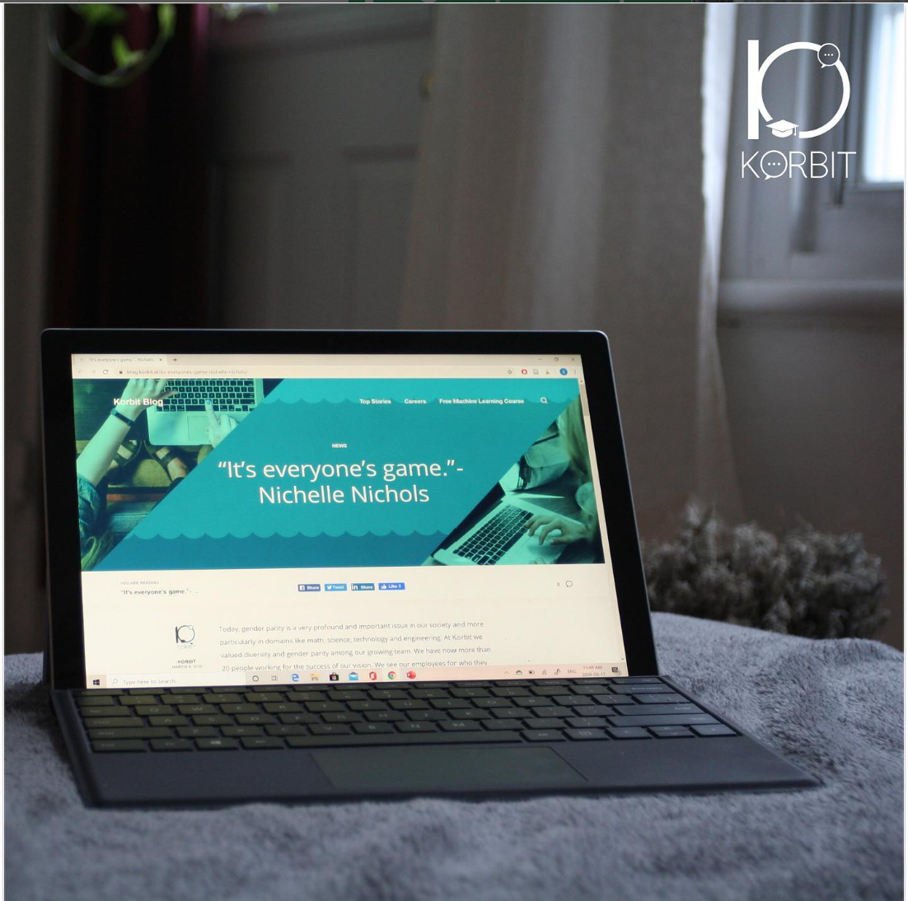

Messaging
Helped clarify product value for audiences navigating a technical and fast-changing category.
AI Communications
I supported communications work for Korbit AI, helping translate technical product value into clear messaging for audiences interested in AI, software development, and team productivity.

This project focused on making a technical product feel understandable, relevant, and credible for the people evaluating it.
Korbit AI operates in a space where product value can be complex, so communications needed to connect the technology to practical outcomes for users and teams.
My work brought together research, product understanding, content strategy, and audience-focused messaging.
Focus
Communications support around artificial intelligence and developer tools.
Messaging shaped for professional and product-led audiences.
Content connecting product capabilities to user value.
Product Story
I helped shape communications that explained what the product does, why it matters, and how it supports software teams in a fast-moving AI landscape.
Contributions
Helped clarify product value for audiences navigating a technical and fast-changing category.
Supported content directions that made AI product benefits easier to understand and evaluate.
Connected product storytelling to audience needs, category trends, and competitive positioning.
My Role